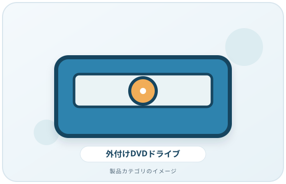
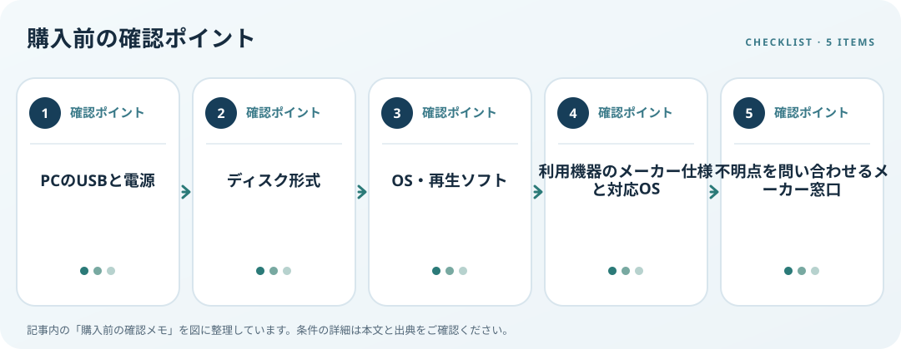

外付けDVDドライブを接続すればDVDビデオが必ず再生できるとは限りません。Microsoftによると、Windows Media Player LegacyにはDVD再生が含まれません。ドライブ本体の読み書き機能と、PCのOS・再生ソフトの条件を分けて確認することが購入前の要点です。
画像・ボタンはAmazonアソシエイトリンクです。適格購入により紹介料を得る場合があります。

Amazon.co.jpで「外付け DVD ドライブ USB」を探す ↗

対応条件を仕様で確認
DVD-ROMを読むだけか、書き込みも必要かを決め、DVD±R/RWなど使うディスク形式への対応を製品仕様で照合します。CDも扱うならCDの読み書き対応を確認します。書き込み速度、対応メディア、付属ソフトの条件は機種ごとに異なるため、メーカー説明書を優先します。
利用環境・設置条件を確認
PCのUSB-A／USB-C端子、付属ケーブル、変換アダプター、バスパワーか別電源かを確認します。DVDビデオを観る予定なら、利用するソフトがその再生に対応するか、対応OSと利用条件を確認します。ドライブ本体の仕様だけで映像再生やソフト付属を決めつけないようにしましょう。
購入前の確認メモ
- PCのUSBと電源
- ディスク形式
- OS・再生ソフト
- 利用機器のメーカー仕様と対応OS
- 不明点を問い合わせるメーカー窓口
記事は出典の公開情報を確認手順に整理したもので、製品の使用・実測・ランキング・価格・在庫の調査は行っていません。購入時には各メーカーの最新情報をご確認ください。
出典
- Troubleshoot Windows Media Player Errors — Microsoft Support（確認日: 2026-10-10）
- Media Feature Pack for Windows N — Microsoft Support（確認日: 2026-10-10）